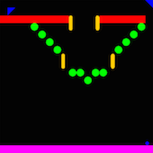

This is phase 2 of the Pingball group project. Recall that in phase 1 you built a text-mode, client-server pinball game that could load pinball game boards and simulate them without user input, passing balls between boards running on different clients.
In phase 2, you will build an interactive version with a graphical user interface, so that multiple users can play the game and control the ball with flippers.

One possible graphical user interface for Pingball. Your GUI may look different.
The purpose of phase 2 is to help you gain more experience with:
Clone your team’s Git repository using (all one line):
git clone ssh://username@athena.dialup.mit.edu/afs/athena.mit.edu/course/6/6.005/git/sp14/projects/gb2/username1-username2-username3.git pingball-phase2
where the three Athena usernames are in alphabetical order.
Your phase 2 repository has no starting code. Instead, you will start by integrating your phase 1 code together with your other teammates, as explained in more detail below.
During the project, lecture and recitation meetings are replaced by team work time. You can work in the classrooms where we usually meet, where staff will be available to answer your questions. Your team can also work elsewhere if you choose, but you should use these times to work together.
Your team will be assigned a TA mentor who will help you with your design and help you stay on the right track as you implement it. You are required to meet with your TA several days into your project. Your TA will get in touch with you to set up that meeting. All team members should attend the meeting.
Other than reflections, all parts of the project should be committed in the repository you share with your teammates. Each commit to the repository should have a comment saying what you changed, as well as who worked on it. Your TA will be reviewing your git log to see individual contributions. Make sure you commit frequently!
During this project, you will perform the following tasks.
Team contracts. Before you begin, you should write and agree to a team contract. A skimpy team contract is a bad idea, because it will make your TA less sympathetic if you have group problems later.
Understand the revised problem. Read the revised Pingball phase 2 specification carefully. It describes how your pingball game should work in this phase of the project.
Reuse and integration. You will begin your development by reusing your code from phase 1, as explained below. Your first step will be to get a working version of the phase 1 specification, which you must show to your TA before proceeding to develop new functionality.
Design. You will need to design your graphical user interface, including model classes (which you should already have created as abstract data types from phase 1), views, and controllers. Remember to write specifications for your classes and methods, to define abstraction functions and rep invariants where appropriate, and to make thread safety arguments where appropriate.
Implementation. Implement the project in Java. Remember to do test-first programming, and to write checkRep() methods and use assertions.
Testing. Test your entire system on the staff sample boards. Furthermore, you should have at least three additional board files as tests. These should show that your client is able to correctly parse and simulate the various gadgets that can appear on the board, with trigger relationships, and that multiple clients can exchange balls with each other. You should also have JUnit tests that test smaller components of your system, and your test cases should be developed in a principled way (e.g. input space partitioning) justified by a testing strategy described in a comment, as we’ve been doing all along.
Reflection. Individually, you will each write a brief commentary saying what you learned from this experience.
The revised Pingball phase 2 specification describes how the pingball game should work in this phase of the project.
No new code is provided for this phase, but you may of course use the physics engine that was provided in phase 1.
You are now in a new group for phase 2, and each of your group members has a different phase 1 implementation of the project. So your first step is to review each other’s phase 1 projects, discuss the pros and cons of their design and coding, and decide how to integrate them.
Each member of your group must bring at least one significant contribution from phase 1 into the integrated implementation. You don’t need to have been the primary author of what you are bringing from phase 1, but you must certainly understand it, be able to explain it to your teammates, and be able to integrate it with their contributions. Examples of significant contributions include:
You may also choose to reimplement some or all of the phase 1 project from scratch. If you choose to reimplement it entirely, then each group member still has to bring a significant contribution from phase 1 in the form of design – e.g. a set of ADT operations, or the client/server message protocol.
You will have a meeting with your TA roughly one week into the project (see the timeline below). At this meeting, you will have to demonstrate that you have regained the phase 1 milestone in your new group – i.e., that your new group’s implementation satisfies the phase 1 requirements for simulating boards and client/server operation. Each of you will also explain what significant contribution you brought from phase 1.
Before you start the project, you should learn about how to draw on the screen with the Java2D drawing package. We have provided some sample code, Smile.java, which displays a window with a smile drawn in it, as a starting point.
You may find these Swing tutorials useful:
One option for managing time in your pingball simulator is javax.swing.Timer. Unlike the timers you used in phase 1, this timer has the advantage that it will always run your listener code on the Swing event-handling thread, which simplifies your concurrency argument.
team-contract.pdf in the top level of your repo, in PDF format.Grades will be allotted according to the following breakdown:
The two intermediate milestones (team contract and phase 1 reintegration) will be graded as binary checkoffs, either passed or missed. Each milestone missed will cost 5 points on the overall project grade.
The course staff will judge and award prizes to teams whose Pingball games embody exemplary design and implementation.
You may optionally submit your project for award consideration on Tuesday, May 13. There will be some time slots during the day for your team to present your system, which you can sign up for in advance. Your team will give a 5-minute presentation to the course staff in which you demonstrate your system and describe its design. You must commit your work (up to that point) to Git by 10am on May 13. You are not required to give this presentation (but then you won’t win anything, either). Everyone can continue to work on the project until the final deadline, but only the work demonstrated in this presentation will be considered for prizes.
Serious award contenders should consider going above and beyond the required specification to implement their own extensions. You might add a board editor, chat, sound effects, video, homomorphic encryption, rescuing pandas from extinction, or something as yet unheard of!
Didit will be in operation for phase 2 of the project, as described in the phase 1 handout.